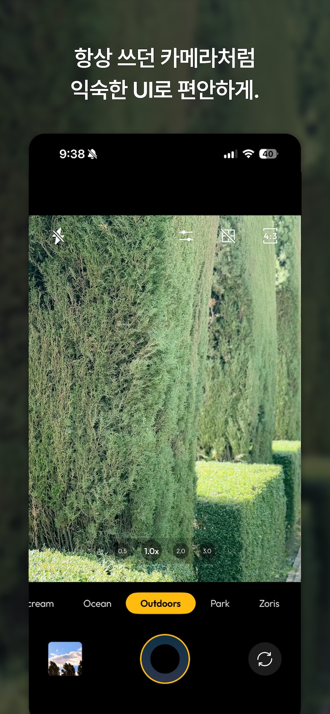
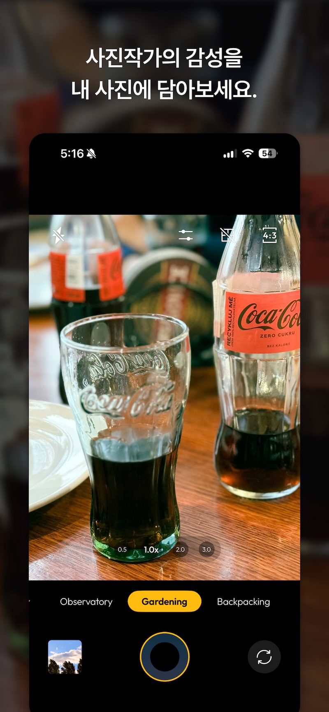

심플게 만나는 감성 필터 카메라
July는 당신의 순간을 특별하게 담아주는 카메라 앱입니다. 다양한 아날로그 필터들이 포함되어 있어, 촬영하는 모든 사진에 빈티지하고 감성적인 느낌을 더할 수 있습니다. 사진을 찍고, 즉시 필터를 적용하여 독특한 분위기를 연출할 수 있습니다. 쉽고 직관적인 인터페이스로 누구나 간편하게 사용할 수 있으며, 당신의 추억을 더욱 아름답게 만들어줍니다.
다양한 감성 필터를 손쉽게 적용하세요.
사진작가의 감성을 내 사진에 담아보세요.
항상 쓰던 카메라처럼 익숙한 UI로 편안하게.
지금 바로 앱 스토어에서 다운로드하세요!